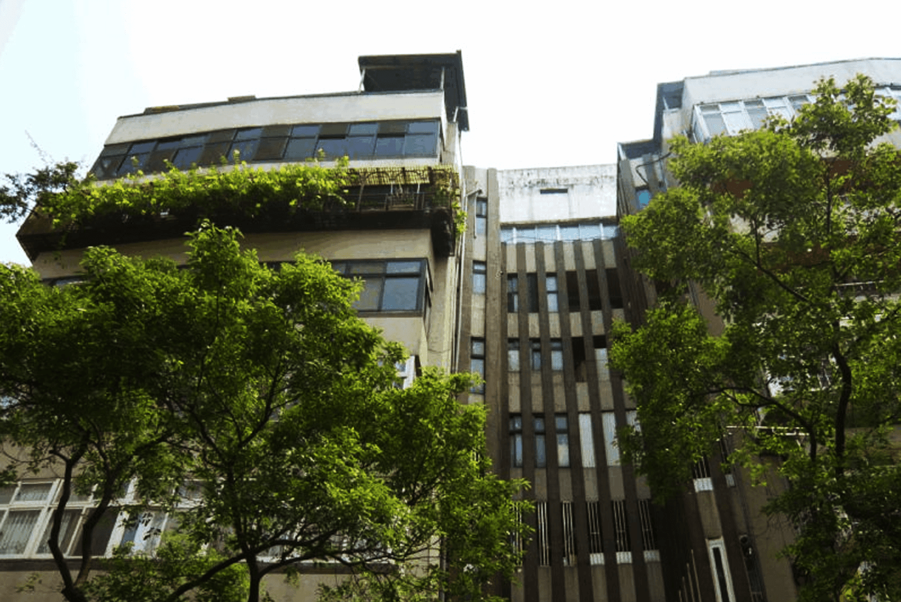
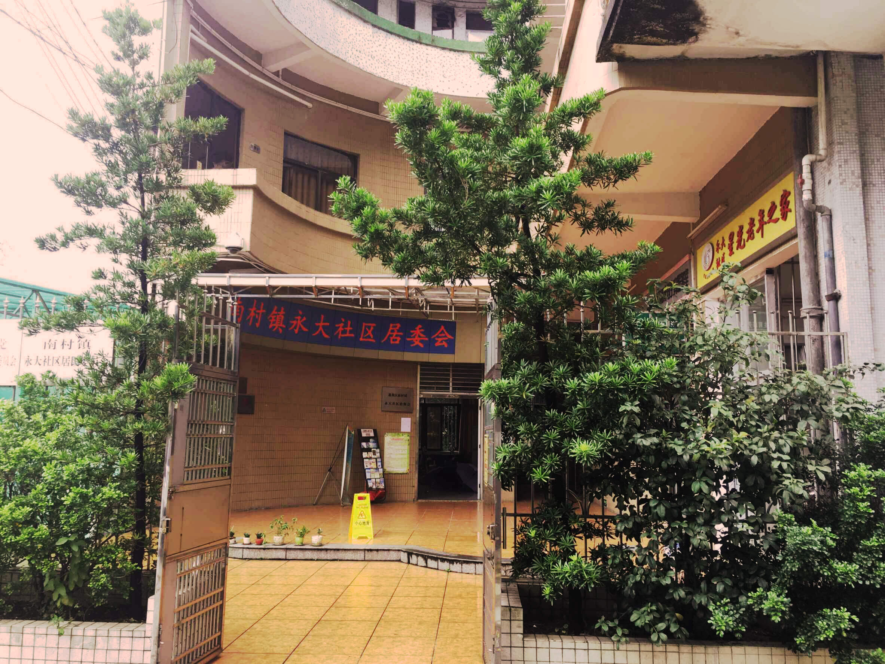

 <!--<link rel="stylesheet" href="../../css/gaikuangContent.css"/>-->
 <!--<title>概况-内容页</title>-->
<div class="gaikuang-content">
    <div class="header">
        <span class="title">永大社区助餐点</span>
        <span class="close"></span>
    </div>
    <div id="slideBox" class="slideBox">
        <div class="bd">
            <ul>
                <li>
                    
                    <div class="state">
                        <span>1/2</span>
                        <span>
                            永大社区位于广州市番禺区南村镇市新路段，原为广州市永大集团公司，属企业型社区，原占地面积1.76平方公里，现占地面积44.3万平方米。1995年转制后，全体职工实行社会化管理。现社区共有居民楼76座，现社区常住人口3318人,其中户籍人口1783人，外来人口1535人。
                        </span>
                        <span></span>
                    </div>
                </li>
                <li style="display: none"></li>
            </ul>
        </div>
        <!-- 下面是前/后按钮代码，如果不需要删除即可 -->
        <a class="prev" href="javascript:void(0)"></a>
        <a class="next" href="javascript:void(0)"></a>
    </div>
</div>
